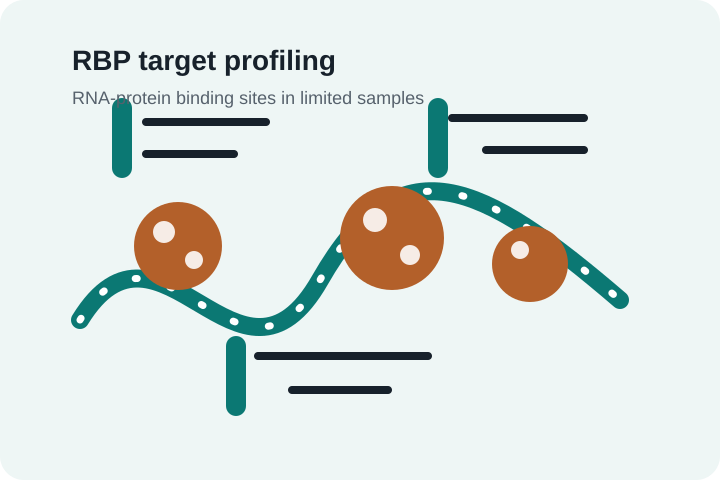

01
Advanced nucleic acid detection
A central pillar of our research is the development of advanced nucleic acid detection methodologies. We focus on engineering high-sensitivity, high-resolution platforms to profile RNA-protein interactions, particularly within limited or challenging biological samples.
Inspired by ARTR-seq and protein-centered RNA-protein interaction studies.